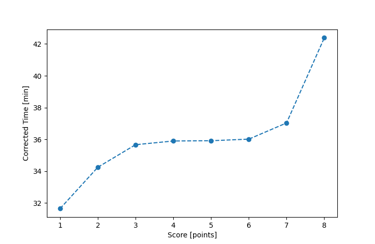

| Wind: | 4 (BFT) |
|---|---|
| RC: | Mike_F, Nedra_F, Anita_M |
| Date: | May 22, 2016 |
| Notes: | M3 170 I told you water on outside crew on the inside, Cap'n Art! |
| Rank / Score | Name | Boat | Input Time [mm:ss] | Input Offset [mm:ss] | Race Time [mm:ss] | Race Time [s] | Handicap | Corrected Time [s] | Corrected Time [mm:ss] |
|---|---|---|---|---|---|---|---|---|---|
| 1.0 | Ron_F | F5 | 30:10 | 00:00 | 30:10 | 1810 | 0.95300 | 1899 | 31:39 |
| 2.0 | Rod_H | PUF | 37:16 | 00:00 | 37:16 | 2236 | 1.08800 | 2055 | 34:15 |
| 3.0 | Barry_O | HLR14 | 38:40 | 00:00 | 38:40 | 2320 | (1.08400) | 2140 | 35:40 |
| 4.0 | Art_M | SWSX | 34:00 | 00:00 | 34:00 | 2040 | 0.94700 | 2154 | 35:54 |
| 5.0 | David_Bu | SF | 35:08 | 00:00 | 35:08 | 2108 | 0.97800 | 2155 | 35:55 |
| 6.0 | Bill_P | SF | 35:13 | 00:00 | 35:13 | 2113 | 0.97800 | 2161 | 36:01 |
| 7.0 | Lewis_V | BCN | 31:58 | 00:00 | 31:58 | 1918 | 0.86300 | 2222 | 37:02 |
| 8.0 | Stacy_O | SWSX | 40:08 | 00:00 | 40:08 | 2408 | 0.94700 | 2543 | 42:23 |

Application Notes:
All race results are unofficial
View source code at https://github.com/cessnao3/portsmouthracecalc/